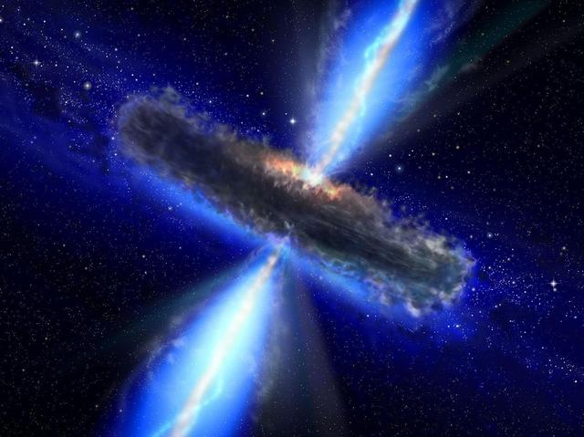

Can a black hole destroy our galaxy?
Menu:
A black hole is large amounts of matter compressed into a smaller area. Black holes are created by the explosion of a supernova (giant star). The density of black holes is what causes anything in its path to be sucked in.
Black holes are prominent in space and our own galaxy has one. Perhaps it can clarify why certain parts of space have not been explored. Or what happens after a star explodes? How was the earth created? The history of black holes and how it is created can help answer these questions. It can help also describe how space and time work
Despite its massive size, black holes are millions of miles away and will not swallow our galaxy or Earth. Yet, other black holes may collide and cause a black hole to grow twice its size and swallow stars and other things in its path.
